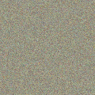

DeRace Horses DeRace 是一个完整的 NFT 赛马生态系统，您可以在其中参与赛马，培育具有独特特征的 NFT 马匹，在自己的 NFT 赛马场举办比赛，并在此过程中赚取利润。 DeRace 通过允许玩家
Desperate ApeWives 受获奖电视剧《绝望的主妇》的启发，DAW 是 10,000 个绝望的 ApeWives NFT 的集合。每个 Ape Wife 都拥有标志性的红唇，不仅是一张很棒的美术 JPEG，它还是一张独家的 DAW
 dGenesis dGen Automatons dGen 自动机是二维循环元胞自动机的一种变体；离散时间确定性系统的实现，其中基于整数的晶格根据定义单元邻域的算法改变状态。由此产生的图像是生成艺术
DIGITAL Collectibles 受音乐启发的艺术！随着每首新歌的发布，开始构建您的 DIGITAL Cassette Collection。数字收藏品是虚拟物品的独特或限量版副本。通常有视觉元素，例如数字
DinoBabies Dino Babies in Space 不仅仅是一个 NFT 项目，它是由 Matt Bolinger 创作的社区首部动画系列。 5,500 个 Genesis Dino Babies 中的每一个都允许其持有者参与 Dino Babies in Space 社区金库，并对节目制作的各个方面
DireWolves Dire Wolves 是 2000 个随机生成的 NFT 碎片的集合。我们茁壮成长，为我们的持有者带来实用性和价值。加入队伍，探索仅限会员的活动、狼窝、Dire DAO 以及更多即将到
DirtLifeNFTs & Gaming $MFlateable MemeFlate 项目展示了它的第一个 NFT 和游戏市场网站 DirtLifeNFTs & Gaming。 MemeFlate 品牌的这一令人兴奋的部分将发布一个独特的 3000 个 NFT 集合，持有者可以访问诸如 Chainlink 集成 NFTstaking 之
Dirtybird Flight Club Dirtybird 于 2005 年开始作为地下唱片公司，但标志的历史始于中学时的 Claude VonStroke，当时他正在画愚蠢的小鸟，希望能让他的兄弟姐妹发笑。你在这里看到的
Dmarket DMarket 市场使数百万游戏玩家和电子竞技爱好者能够使用一整套先进的游戏技术和金融科技功能（包括 Target/Bid、Instant Sale 和 DMarket Circular Excha
Doge Capital 欢迎低音炮！ Doge Capital 是 Solana 区块链上 5000 个可爱的 24x24 像素艺术收藏品的集合。持有 Doge Capital 可授予 Woof 俱乐部的会员资格和所有者的独家特权。猴子和猿猴玩得太久了，所以
Entertainer Punks Entertainer Punks 是第一个在 Tron 生态系统上推出的全原创 NFT！我们不会在任何其他链上列出它们；它们是为 Tron 打造的，而且只为 Tron 打造。 我们对 Tron 的热情使这个决定变得
Ethereum Towers Ethereum Towers 是一个以社区为中心的垂直巨型结构，由 4,388 套居民拥有的公寓和各种公共区域组成，位于即将到来的 Ethereum Worlds Metaverse。 Ethereum Towers 由屡获殊荣的建筑师设
Ethlizards 每个 ethlizard 都是独一无二的，由 100 多种手绘特征组成。 8 只定制设计的 1/1 蜥蜴潜伏在里面…… ethlizard 出售所得的一半（50%）将用于资助我们的蜥蜴库。这笔资金将用
Etholvants Etholvants 是生活在以太坊区块链上的 100% 链上生成、通货紧缩和不断进化的生物。 规则很简单。有 10,000 种独特的 etholvants 可供铸造，每个价格为 0.024 ETH。它们最初将带有 24 个细
Euler Beats Euler Beats 是一个链上音乐 NFT 项目，有 27 首原创曲目，每首曲目 120 个副本。这些音乐 NFT 赋予所有者对音乐的商业权利，此外，他们从该特定歌曲的每份销售中获得 8% 的
Euler Beats Enigma Euler Beats Enigma 是第二个链上生成的音乐合集，拥有 27 张主唱片和 160 张印刷品。主记录所有者从印刷品销售中获得一部分收入。印刷所有者可以随时销毁他们的唱片并获
Exclusible Alpha Exclusible 是一家初创公司，其诞生的唯一目的是通过打开 NFT 的世界及其巨大潜力，将奢侈品牌进一步推进数字化转型。该平台将允许收藏家在五个垂直领域访问世界上
Fantom Doodled Llama FantomDoodledLlama 没有用处！ FantomDoodledLlama 的最大供应量为 400，铸币价格为 10 $FTM。薄荷从 3 月 3 日开始，直到所有 FantomDoodledLlama 售罄！ FantomDoodledLlama 不隶属于任何项目，如果 FantomDoodledLlama 与其他项目合作，我们
Lockdown Lemmings 旅鼠？ 以太坊区块链上的原创、独特、3D 渲染集合。 Lockdown Lemmings 是一个可收藏的 NFT 系列，包含 10,000 只不同的 3D 渲染的可爱毛绒玩具旅鼠，具有不同的毛皮、颜色、道具
Claylings Claylings 是一个 4,040 版的生成艺术项目，其美学灵感来自于 Chicken Run、Wallace 等。 Grommit or Neverhood，唤起 90 年代的怀旧情怀。 正在制作的短片 如何获得
Coin Collect NFTs CoinCollect 是一种在多链上运行的去中心化 NFT 金融协议，可帮助 NFT 交易者、高收益农民、流动性提供者、开发商和 web 3.0 初创公司参与开放的金融市场，没有进入障碍。 CoinCollect
Coolman's Universe Spesh 在 Coolman 的宇宙中寻找他最好的朋友。 为了穿越这个宇宙，Spesh 使用了冲浪板和指南针。 这个指南针不是普通的指南针。 这个指南针不仅为 Spesh 指明了寻找他
Cosmic Wizards Cosmic Wizards 是在 Harmony 区块链上的开放世界 Cosmic Universe MMORPG 中居住在 Crypton 星球上 Cosmic Island 的 10,000 名巫师的神奇集合。 -在 Harmony 区块链上以 0.0001 美元的费用和 2 秒的 tx 确定性铸造。 -将在即将到来
CrazySkullzNFT 一支由 10,000 名独特的 CrazySkullz 组成的军队从死里复活，困扰着我们的星球并承诺毁灭它！ 战争、死亡或疾病的气味使他们更加强烈。 数百年来被杀害的最残暴的罪犯旨在
CreatureToadz CreatureToadz 是 Creatures 和 CryptoToadz 这两个独立成功的 NFT 社区之间的第一个交叉项目。 艺术是从头开始制作的，以确保两者之间*完美*的风格结合。 不遗余力，我倾注了我的灵魂，将
DeadFellaz 用你的 DeadFellaz 代币来艺术、文化和社区 我们在这里是为了对艺术的热爱以及游戏化、IP 和 NFT 技术的发展。 我们的工作重点是在 NFT 空间内进行创新，并以创造性的方
Deafbeef V2 DEAFBEEF 在 2020 年 COVID 19 大流行开始时开始了一个艺术项目。当我的孩子们还小的时候，我在岩石下生活了 7 年之后，我发现模块化合成器已经重新流行起来。拥有电气工
Death Combat ETH NFT Combat / Death Combat 是一款基于以太坊的 PvP 对战游戏，您可以在其中使用您铸造或拥有的武器和装备进行多人战斗。我们是一款跨 IP、跨平台（PC+ 移动）的 PvP 格
DeFine DeFine 的核心是社交。 DeFine 旨在为 web 3.0 构建一个基于 NFT 的去中心化社交网络。 主要亮点包括： 首先，一个独特的基于 NFT 的社交档案系统，赋予用户特殊的创世徽章，这
(B)APETAVERSE (B)APETAVERSE 是 BAPEFAM 聚集在一起的虚拟世界，将收藏品的目的提升到一个新的水平。 从官方的 A BATHING APE®️ 概念化，人猿之王将成为 (B)APETAVERSE 的头条新闻，并首次揭开他的面庞。